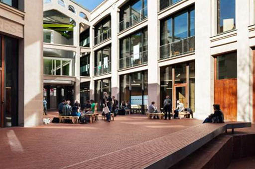

La forma más habitual de acceder al patio de Medialab-Prado es desde la Plaza de las Letras, cruzando el porche de la fachada principal, donde está situada la entrada de la nave Alameda. Existen también otros dos accesos: uno a la izquierda de éste que da a calle Cenicero y suele permanecer cerrado; y otro al fondo a la derecha que da a la calle Alameda.
El patio es un enorme rectángulo, de unos 10 metros de ancho, que discurre entre las dos naves. Dejando a nuestra espalda la Plaza de las Letras, está delimitado a la izquierda por la fachada interior de la nave Cenicero y a la derecha por la de la nave Alameda. Al fondo está cerrado por las paredes en U de un hotel, que enmarcan un pequeño jardín. Antes de llegar a éste, el patio se abre a la derecha, bordeando la fachada posterior de la nave Alameda, hacia la salida que da a la calle del mismo nombre.
Desde el patio podemos acceder al interior de las naves a través de dos puertas en la nave Cenicero, que llevan a la ludoteca y a la cantina, y tres en la nave Alameda, que llevan a la entrada y al Lab 0.
⇧ Volver arriba
Desde el patio se aprecian muy bien las semejanzas y diferencias de las fachadas interiores de las dos naves. Ambas están construidas mediante una estructura de hormigón armado, recubierta exteriormente con un revoco de color crema imitando sillares de piedra, y coronadas por un pretil que oculta su tejado a dos aguas. Son aproximadamente del mismo tamaño, pero de diferentes alturas: la nave Cenicero tiene tres plantas y la nave Alameda solo dos, aunque en su extremo más próximo a la Plaza de las Letras se alza un tercer piso a modo de torreón o ático que apenas se ve desde el patio.
Mientras que la nave Cenicero está adosada al hotel, la nave Alameda está totalmente exenta y no es del todo rectangular, ya que su fachada posterior se cierra formando un chaflán para adaptarse a un quiebro que hace la calle. En origen esta nave se utilizaba como taller, por eso tiene grandes ventanales que permiten la ventilación y la entrada de luz. Están enmarcados por sencillas molduras y un llamativo alfeizar de azulejos verdes.
Este estilo historicista de la nave Alameda, sobrio y elegante, contrasta con el aspecto más industrial y sin decoración de la nave Cenicero, que funcionaba como secadero de madera y que se abría completamente al patio, sin paredes, dejando el armazón interior de vigas y pilares de hormigón a la vista. Para conservar esta idea de continuidad entre interior y exterior, en la rehabilitación se optó por cubrir estos huecos con enormes cristaleras, unas fijas y otras correderas, protegidas por una sencilla barandilla tubular de hierro y con el alfeizar de azulejos verdes a lo largo de toda la fachada, interrumpido únicamente por los pilares de la construcción. Esta continuidad también la vemos en el llamativo pavimento del patio, de ladrillos rojizos colocados en espiga, que se extienden hacia el interior de la nave cubriendo todo el suelo de la planta baja.
⇧ Volver arriba
Nada más entrar al patio, tras cruzar el porche de entrada, situado en la Plaza de las Letras, encontramos a mano izquierda un pasillo que discurre entre unas casas y la fachada delantera de la nave Cenicero. Es un antiguo paso de carros que comunica el patio con dicha calle y que suele estar cerrado con una verja. Si avanzamos a lo largo del patio, entre las dos naves y en dirección al jardín, pasamos por un primer tramo que queda cubierto por La Cosa, la escalera colgante. En esta zona hay mesas y sillas que se pueden utilizar libremente. A nuestra izquierda, tenemos la puerta que da acceso a la ludoteca de la nave Cenicero.
Continuamos caminando hacia la parte descubierta, desde donde podemos entrar al Lab 0 de la nave Alameda por cualquiera de sus dos puertas, una situada hacia la mitad de la nave y otra en el chaflán de su fachada posterior. En el dintel de esta última podemos ver la palabra “Talleres” grabada sobre el revoco. A la izquierda, ya cerca del punto donde nave Cenicero se une al hotel, encontramos tres puertas casi seguidas: la primera es la de la Cantina, la segunda lleva a una sala de mantenimiento y la tercera a unos baños y a la escalera de emergencia. En esta zona descubierta del patio, decorada con árboles y plantas en macetas, se sitúan las mesas y sillas pertenecientes a la terraza de la cantina. Cuando hace buen tiempo, los ventanales están descorridos y se puede entrar a la cantina también por ellos.
Antes de llegar al jardín del fondo, el patio se abre a la derecha, bordeando la fachada trasera de la nave Alameda, hacia la salida que da a esa calle. Junto a esta puerta hay un aparcamiento para bicicletas.
El jardín está situado a un nivel más bajo que el resto del patio, y separado del mismo por un largo banco de ladrillo. Para acceder tenemos que bajar por una rampa que arranca a la derecha del banco y desciende paralela a éste. En el centro del jardín hay un espacio con suelo de gravilla para que jueguen los niños, con un banco de madera en forma de ciempiés, construido en el Fablab, y los restos del tronco de un árbol enfermo que hubo que talar y se cortó en secciones para hacer asientos. Alrededor de este espacio hay helechos y diferentes especies de árboles. El hotel que rodea el jardín tiene 7 plantas y una sencilla fachada de color blanco y negro.
⇧ Volver arriba
⇦ Anterior: El edificio por fuera
⇨ Siguiente: La Cosa